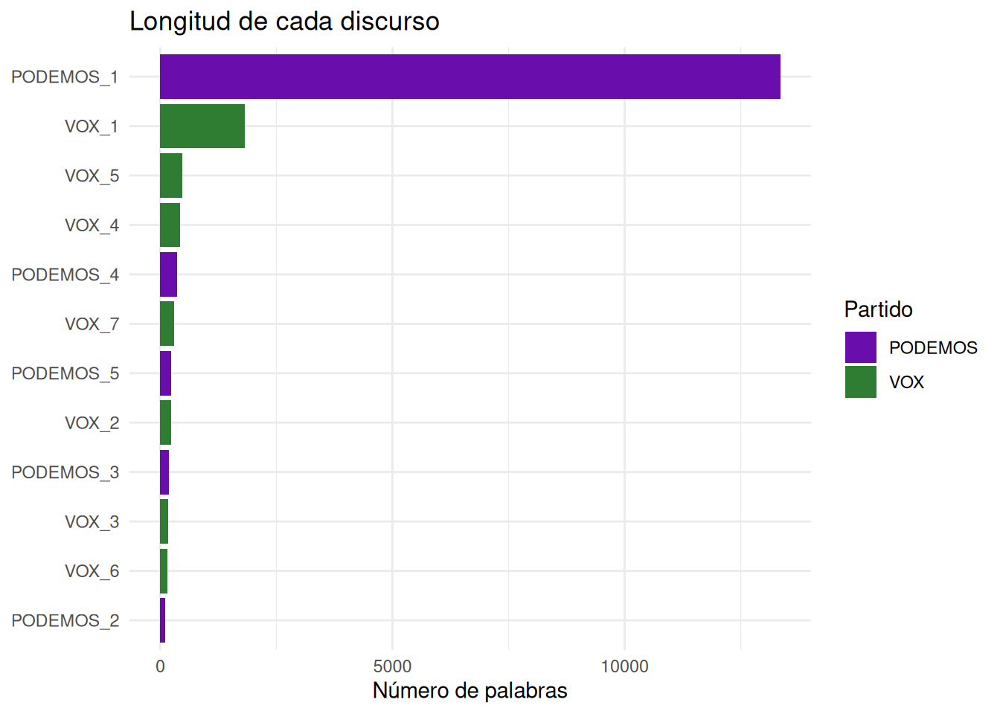
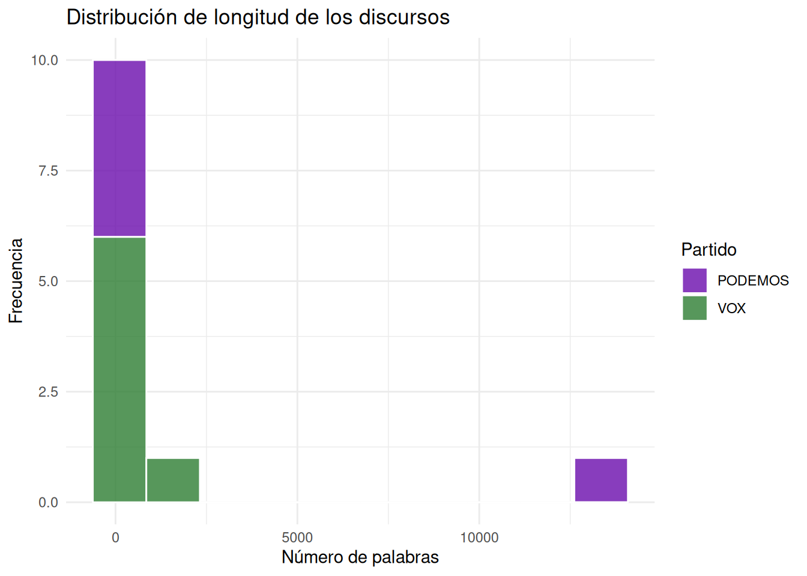
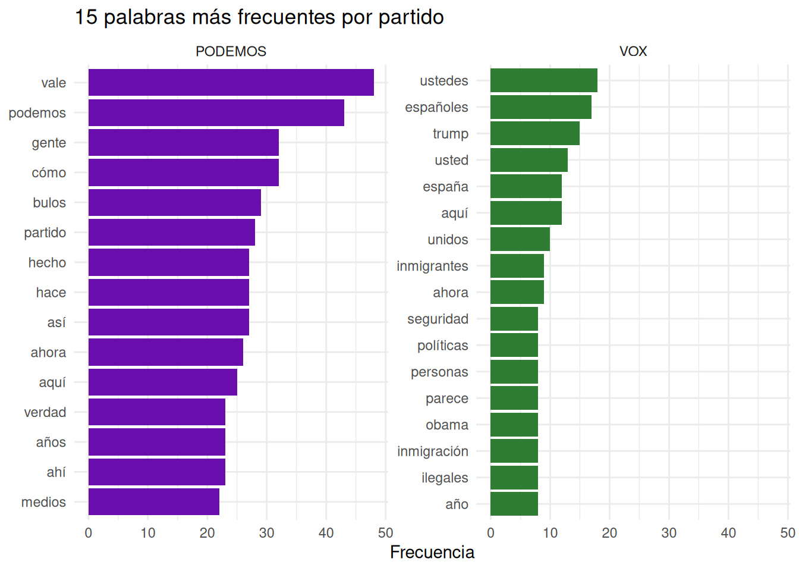
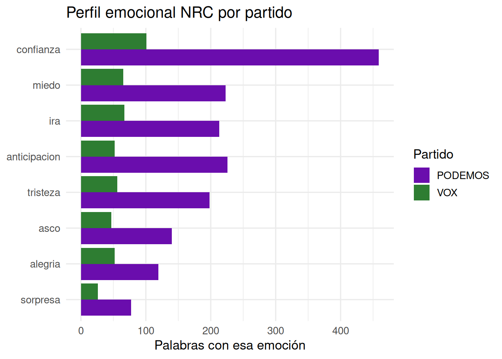

# Instalar un paquete
install.packages("dplyr")
# Instalar varios a la vez
install.packages(c("dplyr", "ggplot2", "tidytext"))Antes de empezar: instalación del entorno
Para seguir este curso necesitas tres herramientas instaladas en tu ordenador. Instálalas en este orden.
Paso 1 — Instalar R obligatorio
Descarga el instalador .exe desde la web oficial de CRAN y ejecútalo con las opciones por defecto:
👉 https://cran.r-project.org/bin/windows/base/
Paso 2 — Instalar RStudio Desktop obligatorio
👉 https://posit.co/download/rstudio-desktop/
⚠️ Instala RStudio después de R. RStudio detecta automáticamente la instalación de R al arrancar.
Paso 3 — Instalar Quarto opcional
Paso 1 — Instalar R obligatorio
Descarga el paquete .pkg desde CRAN. Elige la versión según tu chip:
- Apple Silicon (M1 / M2 / M3): archivo con
arm64 - Intel: archivo con
x86_64
👉 https://cran.r-project.org/bin/macosx/
Paso 2 — Instalar RStudio Desktop obligatorio
👉 https://posit.co/download/rstudio-desktop/
💡 Si macOS bloquea el instalador, ve a Ajustes del sistema → Privacidad y seguridad → “Abrir igualmente”.
Paso 3 — Instalar Quarto opcional
Paquetes en R: CRAN, GitHub y cómo usarlos
Qué es CRAN
CRAN (Comprehensive R Archive Network) es el repositorio oficial de paquetes de R. Actualmente alberga más de 20.000 paquetes revisados y mantenidos por la comunidad. Cuando ejecutas install.packages(), R descarga el paquete directamente desde CRAN.
Puedes buscar paquetes por tema en la sección Task Views, que agrupa paquetes por área de aplicación — hay vistas específicas para lingüística, ciencias sociales, análisis de texto y más:
Instalar paquetes desde CRAN
La instalación solo hace falta hacerla una vez por máquina. Después el paquete queda instalado permanentemente.
Cargar paquetes con library()
Aunque el paquete esté instalado, hay que cargarlo en cada sesión con library() antes de poder usarlo. Es como abrir una aplicación que ya tienes instalada.
# Cargar un paquete
library(dplyr)
# La diferencia entre instalar y cargar:
# install.packages("dplyr") → se hace UNA vez, instala el paquete en el disco
# library(dplyr) → se hace en CADA sesión, carga el paquete en memoriaRegla práctica: pon todos los
library()al principio de tu script. Así cualquier persona que lo ejecute sabe desde el principio qué paquetes necesita.
Instalar paquetes desde GitHub
Algunos paquetes están en desarrollo activo y aún no han llegado a CRAN, o tienen versiones más recientes en GitHub. Para instalarlos se usa el paquete remotes:
# Primero instalar remotes (solo una vez)
install.packages("remotes")
# Instalar un paquete desde GitHub
# remotes::install_github("usuario/nombre_repositorio")
# Ejemplo: versión de desarrollo de ggplot2
remotes::install_github("tidyverse/ggplot2")Actualizar paquetes
Con el tiempo los paquetes reciben actualizaciones. Para actualizarlos todos de una vez:
update.packages(ask = FALSE)Instalar los paquetes del curso
Ejecuta esto una sola vez en la consola de RStudio antes de empezar:
install.packages(c(
"tidyverse",
"tidytext",
"syuzhet",
"quanteda",
"quanteda.textstats",
"quanteda.textplots",
"udpipe"
))Cheatsheets: referencia rápida de cada paquete
Las cheatsheets son hojas de referencia de una o dos páginas que resumen las funciones más importantes de cada paquete. Son imprescindibles cuando estás aprendiendo.
| Paquete | Para qué sirve | Cheatsheet |
|---|---|---|
dplyr |
Manipulación de datos | descargar |
ggplot2 |
Visualización de datos | descargar |
tidyr |
Reorganización de datos | descargar |
readr |
Importación de datos | descargar |
stringr |
Manipulación de texto | descargar |
purrr |
Programación funcional | descargar |
tidytext |
Análisis de texto tidy | descargar |
lubridate |
Fechas y tiempos | descargar |
quanteda |
Lingüística de corpus | descargar |
Puedes encontrar todas las cheatsheets oficiales de Posit aquí:
👉 https://posit.co/resources/cheatsheets/
Parte I: R básico
Qué es R
R es un lenguaje de programación diseñado para el análisis de datos y la estadística. A diferencia de Excel, R es reproducible — cualquier análisis puede replicarse exactamente ejecutando el mismo código. Es gratuito y tiene una comunidad enorme en humanidades y ciencias sociales.
En lingüística, R se usa para análisis de corpus, estadística de frecuencias, modelado de variación y visualización de patrones en el lenguaje.
R y RStudio
Son dos cosas distintas:
- R es el motor: el lenguaje que interpreta y ejecuta el código.
- RStudio es el entorno: la interfaz desde la que trabajamos.
RStudio tiene cuatro paneles:
| Panel | Ubicación | Para qué sirve |
|---|---|---|
| Script | Arriba izquierda | Escribir y guardar código |
| Console | Abajo izquierda | Ejecutar código y ver resultados |
| Environment | Arriba derecha | Ver los objetos creados |
| Files / Plots | Abajo derecha | Archivos, gráficos, paquetes |
R como calculadora
Lo más básico: R evalúa expresiones y devuelve resultados.
2 + 3[1] 510 / 4[1] 2.52 ^ 8[1] 256sqrt(144)[1] 12Objetos y asignación
El operador <- guarda un valor bajo un nombre. Ese nombre queda disponible en el Environment para usarlo después.
mi_nombre <- "Ana García"
edad <- 23
aprobado <- TRUE
mi_nombre[1] "Ana García"edad + 10[1] 33Tipos de datos
# Numérico
x <- 3.14
class(x)[1] "numeric"# Texto (character)
palabra <- "lingüística"
class(palabra)[1] "character"# Lógico
es_verbo <- FALSE
class(es_verbo)[1] "logical"Vectores
Un vector es una colección ordenada de elementos del mismo tipo. Es la estructura más básica de R.
# Vector numérico: longitudes de palabras
longitudes <- c(3, 5, 2, 8, 4, 6, 3, 7)
mean(longitudes)[1] 4.75max(longitudes)[1] 8length(longitudes)[1] 8# Vector de texto
palabras <- c("casa", "árbol", "luz", "universidad")
nchar(palabras) # número de caracteres de cada palabra[1] 4 5 3 11Ejercicio 1
- Crea un objeto
autorcon tu nombre completo. - Crea un vector
silabascon el número de sílabas de cinco palabras que elijas. - Calcula la media de sílabas con
mean(). - ¿Qué devuelve
class(silabas)?
Parte II: Tidyverse y su filosofía
Qué es el tidyverse
El tidyverse es una colección de paquetes de R diseñados para trabajar juntos siguiendo una filosofía común: los datos deben estar ordenados (tidy), el código debe ser legible, y las operaciones deben encadenarse de forma natural.
library(tidyverse)── Attaching core tidyverse packages ──────────────────────── tidyverse 2.0.0 ──
✔ dplyr 1.2.1 ✔ readr 2.2.0
✔ forcats 1.0.1 ✔ stringr 1.6.0
✔ ggplot2 4.0.3 ✔ tibble 3.3.1
✔ lubridate 1.9.5 ✔ tidyr 1.3.2
✔ purrr 1.2.2
── Conflicts ────────────────────────────────────────── tidyverse_conflicts() ──
✖ dplyr::filter() masks stats::filter()
✖ dplyr::lag() masks stats::lag()
ℹ Use the conflicted package (<http://conflicted.r-lib.org/>) to force all conflicts to become errorsEl paquete central es dplyr, que ofrece cinco verbos para transformar datos:
| Verbo | Qué hace |
|---|---|
select() |
Seleccionar columnas |
filter() |
Filtrar filas por condición |
mutate() |
Crear o modificar columnas |
summarise() |
Calcular resúmenes |
arrange() |
Ordenar filas |
Tibbles: datos ordenados
Un tibble es la versión tidyverse de un data frame. Cada fila es una observación, cada columna es una variable.
corpus_mini <- tibble(
palabra = c("casa", "árbol", "correr", "azul", "rápido"),
categoria = c("sustantivo", "sustantivo", "verbo", "adjetivo", "adjetivo"),
silabas = c(2, 2, 3, 2, 3),
frecuencia = c(8420, 3105, 5622, 4890, 2310)
)
corpus_mini# A tibble: 5 × 4
palabra categoria silabas frecuencia
<chr> <chr> <dbl> <dbl>
1 casa sustantivo 2 8420
2 árbol sustantivo 2 3105
3 correr verbo 3 5622
4 azul adjetivo 2 4890
5 rápido adjetivo 3 2310El pipe: |>
El operador |> (pipe) pasa el resultado de una operación a la siguiente. Permite leer el código de izquierda a derecha, como una frase en español.
# Sin pipe — difícil de leer
arrange(filter(corpus_mini, silabas > 2), frecuencia)# A tibble: 2 × 4
palabra categoria silabas frecuencia
<chr> <chr> <dbl> <dbl>
1 rápido adjetivo 3 2310
2 correr verbo 3 5622# Con pipe — mucho más claro
corpus_mini |>
filter(silabas > 2) |>
arrange(frecuencia)# A tibble: 2 × 4
palabra categoria silabas frecuencia
<chr> <chr> <dbl> <dbl>
1 rápido adjetivo 3 2310
2 correr verbo 3 5622select() — elegir columnas
corpus_mini |> select(palabra, frecuencia)# A tibble: 5 × 2
palabra frecuencia
<chr> <dbl>
1 casa 8420
2 árbol 3105
3 correr 5622
4 azul 4890
5 rápido 2310filter() — filtrar filas
corpus_mini |> filter(categoria == "sustantivo")# A tibble: 2 × 4
palabra categoria silabas frecuencia
<chr> <chr> <dbl> <dbl>
1 casa sustantivo 2 8420
2 árbol sustantivo 2 3105corpus_mini |> filter(frecuencia > 5000)# A tibble: 2 × 4
palabra categoria silabas frecuencia
<chr> <chr> <dbl> <dbl>
1 casa sustantivo 2 8420
2 correr verbo 3 5622mutate() — crear variables nuevas
corpus_mini |>
mutate(n_chars = nchar(palabra)) |>
select(palabra, silabas, n_chars)# A tibble: 5 × 3
palabra silabas n_chars
<chr> <dbl> <int>
1 casa 2 4
2 árbol 2 5
3 correr 3 6
4 azul 2 4
5 rápido 3 6summarise() y group_by() — resúmenes por grupo
corpus_mini |>
group_by(categoria) |>
summarise(
n = n(),
media_freq = round(mean(frecuencia), 0),
media_sil = round(mean(silabas), 1)
)# A tibble: 3 × 4
categoria n media_freq media_sil
<chr> <int> <dbl> <dbl>
1 adjetivo 2 3600 2.5
2 sustantivo 2 5762 2
3 verbo 1 5622 3 arrange() — ordenar
corpus_mini |> arrange(desc(frecuencia))# A tibble: 5 × 4
palabra categoria silabas frecuencia
<chr> <chr> <dbl> <dbl>
1 casa sustantivo 2 8420
2 correr verbo 3 5622
3 azul adjetivo 2 4890
4 árbol sustantivo 2 3105
5 rápido adjetivo 3 2310Ejercicio 2
Usando corpus_mini:
- Filtra solo las palabras con 3 sílabas.
- Crea una variable
freq_por_silaba = frecuencia / silabas. ¿Qué palabra tiene el valor más alto? - Calcula la frecuencia media por número de sílabas con
group_by()ysummarise(). - Ordena el corpus por longitud de palabra de mayor a menor.
Parte III: Carga del corpus real
El corpus: discursos políticos sobre inmigración
Trabajamos con 12 transcripciones reales de discursos de VOX (7) y Podemos (5) sobre inmigración en España. Los textos están alojados en GitHub y se cargan directamente desde R — no hace falta descargar nada manualmente.
library(readr)
library(stringr)
library(purrr)
base_url <- "https://raw.githubusercontent.com/AritzUMA/runav/main/discursos/"
archivos <- c(
"VOX_1.txt", "VOX_2.txt", "VOX_3.txt", "VOX_4.txt",
"VOX_5.txt", "VOX_6.txt", "VOX_7.txt",
"PODEMOS_1.txt", "PODEMOS_2.txt", "PODEMOS_3.txt",
"PODEMOS_4.txt", "PODEMOS_5.txt"
)
leer_discurso <- function(archivo) {
url <- paste0(base_url, archivo)
texto <- read_lines(url) |> paste(collapse = " ")
partido <- str_extract(archivo, "^[A-Z]+")
id <- str_remove(archivo, "\\.txt$")
tibble(
id = id,
partido = partido,
texto = texto,
n_palabras = str_count(texto, "\\S+"),
n_chars = nchar(texto)
)
}
corpus <- map(archivos, leer_discurso) |> list_rbind()
glimpse(corpus)Rows: 12
Columns: 5
$ id <chr> "VOX_1", "VOX_2", "VOX_3", "VOX_4", "VOX_5", "VOX_6", "VOX_…
$ partido <chr> "VOX", "VOX", "VOX", "VOX", "VOX", "VOX", "VOX", "PODEMOS",…
$ texto <chr> "Este lado está con nosotros, Rosío Bonasterio, analista po…
$ n_palabras <int> 1823, 228, 176, 423, 475, 153, 300, 13350, 112, 179, 361, 2…
$ n_chars <int> 10474, 1383, 1047, 2540, 2733, 878, 1690, 75955, 670, 1019,…Primera exploración
corpus |> count(partido)# A tibble: 2 × 2
partido n
<chr> <int>
1 PODEMOS 5
2 VOX 7corpus |>
group_by(partido) |>
summarise(
n_discursos = n(),
media_palabras = round(mean(n_palabras), 0),
total_palabras = sum(n_palabras)
)# A tibble: 2 × 4
partido n_discursos media_palabras total_palabras
<chr> <int> <dbl> <int>
1 PODEMOS 5 2846 14231
2 VOX 7 511 3578corpus |>
select(id, partido, n_palabras) |>
arrange(desc(n_palabras))# A tibble: 12 × 3
id partido n_palabras
<chr> <chr> <int>
1 PODEMOS_1 PODEMOS 13350
2 VOX_1 VOX 1823
3 VOX_5 VOX 475
4 VOX_4 VOX 423
5 PODEMOS_4 PODEMOS 361
6 VOX_7 VOX 300
7 PODEMOS_5 PODEMOS 229
8 VOX_2 VOX 228
9 PODEMOS_3 PODEMOS 179
10 VOX_3 VOX 176
11 VOX_6 VOX 153
12 PODEMOS_2 PODEMOS 112Ejercicio 3
- ¿Qué partido tiene más palabras en total?
- Filtra los discursos con más de 400 palabras. ¿De qué partido son?
- Crea una variable
long_media_palabra = n_chars / n_palabras. ¿Qué partido usa palabras más largas?
Parte IV: Análisis de texto con tidytext
Qué es tidytext
tidytext aplica la filosofía tidyverse al texto: convierte documentos en tablas donde cada fila es una palabra. Esto permite usar todos los verbos de dplyr que ya conocemos para analizar texto.
library(tidytext)Tokenización
Tokenizar significa dividir un texto en unidades mínimas — aquí, palabras. La función unnest_tokens() hace exactamente eso.
tokens <- corpus |>
select(id, partido, texto) |>
unnest_tokens(palabra, texto)
tokens# A tibble: 17,829 × 3
id partido palabra
<chr> <chr> <chr>
1 VOX_1 VOX este
2 VOX_1 VOX lado
3 VOX_1 VOX está
4 VOX_1 VOX con
5 VOX_1 VOX nosotros
6 VOX_1 VOX rosío
7 VOX_1 VOX bonasterio
8 VOX_1 VOX analista
9 VOX_1 VOX político
10 VOX_1 VOX bienvenido
# ℹ 17,819 more rowstokens |> count(partido)# A tibble: 2 × 2
partido n
<chr> <int>
1 PODEMOS 14249
2 VOX 3580Frecuencias brutas
tokens |>
count(partido, palabra, sort = TRUE) |>
group_by(partido) |>
slice_max(n, n = 10)# A tibble: 20 × 3
# Groups: partido [2]
partido palabra n
<chr> <chr> <int>
1 PODEMOS que 829
2 PODEMOS de 647
3 PODEMOS la 388
4 PODEMOS y 379
5 PODEMOS a 332
6 PODEMOS en 312
7 PODEMOS es 275
8 PODEMOS el 248
9 PODEMOS no 244
10 PODEMOS un 226
11 VOX que 211
12 VOX de 170
13 VOX a 137
14 VOX y 111
15 VOX los 95
16 VOX en 74
17 VOX el 67
18 VOX la 65
19 VOX es 56
20 VOX no 51Como era de esperar, dominan artículos, preposiciones y conjunciones — palabras sin contenido analítico.
Stopwords
Las stopwords son palabras vacías que conviene eliminar antes del análisis. tidytext incluye listas en varios idiomas.
stop_es <- get_stopwords(language = "es")
stop_es# A tibble: 308 × 2
word lexicon
<chr> <chr>
1 de snowball
2 la snowball
3 que snowball
4 el snowball
5 en snowball
6 y snowball
7 a snowball
8 los snowball
9 del snowball
10 se snowball
# ℹ 298 more rowsstop_custom <- tibble(word = c(
"si", "ser", "asi", "ahi", "aqui", "tan", "tal",
"hay", "ver", "van", "vez", "anos", "ano", "hoy",
"dia", "bueno", "claro", "entonces", "pues", "bien",
"solo", "puede", "hacer", "decir", "creo", "sí"
))
stop_todas <- bind_rows(stop_es, stop_custom)Frecuencias limpias
tokens_limpios <- tokens |>
filter(!palabra %in% stop_todas$word) |>
filter(nchar(palabra) > 2)
tokens_limpios |>
count(partido, palabra, sort = TRUE) |>
group_by(partido) |>
slice_max(n, n = 15)# A tibble: 32 × 3
# Groups: partido [2]
partido palabra n
<chr> <chr> <int>
1 PODEMOS vale 48
2 PODEMOS podemos 43
3 PODEMOS cómo 32
4 PODEMOS gente 32
5 PODEMOS bulos 29
6 PODEMOS partido 28
7 PODEMOS así 27
8 PODEMOS hace 27
9 PODEMOS hecho 27
10 PODEMOS ahora 26
# ℹ 22 more rowsTF-IDF: palabras distintivas
La frecuencia bruta favorece palabras comunes a ambos partidos. El TF-IDF (Term Frequency–Inverse Document Frequency) identifica las palabras más características de cada partido frente al otro.
tfidf <- tokens_limpios |>
count(partido, palabra) |>
bind_tf_idf(palabra, partido, n) |>
group_by(partido) |>
slice_max(tf_idf, n = 15) |>
arrange(partido, desc(tf_idf))
tfidf# A tibble: 42 × 6
# Groups: partido [2]
partido palabra n tf idf tf_idf
<chr> <chr> <int> <dbl> <dbl> <dbl>
1 PODEMOS vale 48 0.00813 0.693 0.00564
2 PODEMOS bulos 29 0.00491 0.693 0.00341
3 PODEMOS bulo 21 0.00356 0.693 0.00247
4 PODEMOS fuente 21 0.00356 0.693 0.00247
5 PODEMOS muchas 20 0.00339 0.693 0.00235
6 PODEMOS derecha 18 0.00305 0.693 0.00211
7 PODEMOS judicial 18 0.00305 0.693 0.00211
8 PODEMOS poder 17 0.00288 0.693 0.00200
9 PODEMOS pueblo 16 0.00271 0.693 0.00188
10 PODEMOS red 16 0.00271 0.693 0.00188
# ℹ 32 more rowsEjercicio 4
- ¿Qué palabras son más distintivas de VOX según el TF-IDF? ¿Y de Podemos?
- ¿Coincide con lo que esperabas del discurso político sobre inmigración?
- Añade 5 palabras más a
stop_customque consideres irrelevantes y regenera las frecuencias limpias. - Reto: Calcula el TF-IDF a nivel de discurso individual (usando
iden lugar departido). ¿Qué discurso de VOX es más diferente de los demás?
Análisis emocional con NRC
El NRC Emotion Lexicon asocia palabras a 8 emociones básicas (alegría, tristeza, miedo, ira, sorpresa, asco, anticipación, confianza) y 2 polaridades (positivo/negativo). El paquete syuzhet incluye el NRC traducido al español.
library(syuzhet)
get_nrc_sentiment(
c("migrante", "ilegal", "acogida", "expulsión", "derechos"),
language = "spanish"
) anger anticipation disgust fear joy sadness surprise trust negative positive
1 0 0 0 0 0 0 0 0 0 0
2 3 0 3 2 0 3 0 0 3 0
3 0 0 0 0 0 0 0 0 0 0
4 0 0 0 0 0 0 0 0 0 0
5 0 0 0 0 0 0 0 0 0 0palabras_unicas <- unique(tokens_limpios$palabra)
nrc_scores <- get_nrc_sentiment(palabras_unicas, language = "spanish")
nrc_scores$palabra <- palabras_unicas
tokens_nrc <- tokens_limpios |>
left_join(nrc_scores, by = "palabra")
emociones <- tokens_nrc |>
group_by(partido) |>
summarise(
ira = sum(anger),
anticipacion = sum(anticipation),
asco = sum(disgust),
miedo = sum(fear),
alegria = sum(joy),
tristeza = sum(sadness),
sorpresa = sum(surprise),
confianza = sum(trust),
negativo = sum(negative),
positivo = sum(positive)
)
emociones# A tibble: 2 × 11
partido ira anticipacion asco miedo alegria tristeza sorpresa confianza
<chr> <dbl> <dbl> <dbl> <dbl> <dbl> <dbl> <dbl> <dbl>
1 PODEMOS 213 226 140 223 119 198 77 459
2 VOX 67 52 47 65 52 56 26 101
# ℹ 2 more variables: negativo <dbl>, positivo <dbl>emociones |>
mutate(
total = negativo + positivo,
pct_neg = round(negativo / total * 100, 1),
pct_pos = round(positivo / total * 100, 1)
) |>
select(partido, negativo, positivo, pct_neg, pct_pos)# A tibble: 2 × 5
partido negativo positivo pct_neg pct_pos
<chr> <dbl> <dbl> <dbl> <dbl>
1 PODEMOS 438 575 43.2 56.8
2 VOX 129 151 46.1 53.9Palabras clave sobre inmigración
terminos_clave <- c(
"migrantes", "inmigrantes", "ilegales", "regularizar",
"fronteras", "expulsion", "acogida", "derechos",
"menores", "deportacion"
)
tokens |>
filter(palabra %in% terminos_clave) |>
count(partido, palabra, sort = TRUE)# A tibble: 12 × 3
partido palabra n
<chr> <chr> <int>
1 VOX inmigrantes 9
2 VOX ilegales 8
3 PODEMOS derechos 5
4 VOX fronteras 5
5 PODEMOS migrantes 4
6 PODEMOS acogida 1
7 PODEMOS ilegales 1
8 PODEMOS inmigrantes 1
9 PODEMOS menores 1
10 PODEMOS regularizar 1
11 VOX derechos 1
12 VOX regularizar 1Ejercicio 5
- ¿Qué partido usa más términos con carga emocional negativa según el NRC?
- Añade más términos al vector
terminos_clave. ¿Cambia el patrón entre partidos? - Reto: Calcula el perfil emocional NRC por discurso individual. ¿Hay variación dentro del mismo partido?
Parte V: Análisis de corpus con quanteda
Qué es quanteda
quanteda es el paquete de referencia para lingüística de corpus en R. Su unidad central es el corpus object — una estructura optimizada para almacenar y analizar grandes colecciones de textos.
library(quanteda)Package version: 4.4
Unicode version: 15.1
ICU version: 74.2Parallel computing: disabledSee https://quanteda.io for tutorials and examples.library(quanteda.textstats)
library(quanteda.textplots)Crear un corpus quanteda
corpus_q <- corpus(corpus, text_field = "texto", docid_field = "id")
summary(corpus_q)Corpus consisting of 12 documents, showing 12 documents:
Text Types Tokens Sentences partido n_palabras n_chars
VOX_1 620 2155 108 VOX 1823 10474
VOX_2 131 261 11 VOX 228 1383
VOX_3 129 198 8 VOX 176 1047
VOX_4 209 461 15 VOX 423 2540
VOX_5 223 520 21 VOX 475 2733
VOX_6 91 162 6 VOX 153 878
VOX_7 158 339 17 VOX 300 1690
PODEMOS_1 2795 15528 676 PODEMOS 13350 75955
PODEMOS_2 81 119 5 PODEMOS 112 670
PODEMOS_3 111 190 5 PODEMOS 179 1019
PODEMOS_4 175 394 18 PODEMOS 361 1943
PODEMOS_5 134 282 25 PODEMOS 229 1340Tokens y DFM
toks <- tokens(corpus_q,
remove_punct = TRUE,
remove_numbers = TRUE,
remove_symbols = TRUE) |>
tokens_tolower() |>
tokens_remove(stopwords("es")) |>
tokens_remove(stop_custom$word)
toksTokens consisting of 12 documents and 3 docvars.
VOX_1 :
[1] "lado" "rosío" "bonasterio" "analista"
[5] "político" "bienvenido" "buenos" "días"
[9] "allá" "cifra" "sencí" "consecuencias"
[ ... and 714 more ]
VOX_2 :
[1] "perdón" "extranjeros" "usted" "refiere"
[5] "trabajan" "casas" "casas" "atienden"
[9] "supermercados" "limpian" "centros" "salud"
[ ... and 84 more ]
VOX_3 :
[1] "inmigrantes" "ilegales" "hace" "días" "metros"
[6] "costa" "marroquí" "supone" "ir" "rescatarlos"
[11] "barcos" "atravesando"
[ ... and 65 more ]
VOX_4 :
[1] "señor" "sánchez" "piensa" "gobierno" "proteger"
[6] "españoles" "frente" "inmigración" "ilegal" "pregunto"
[11] "ustedes" "quieren"
[ ... and 178 more ]
VOX_5 :
[1] "señor" "sánchez" "siguen" "financiando" "inmigración"
[6] "ilegal" "digo" "según" "noticias" "leemos"
[11] "parece" "ustedes"
[ ... and 203 more ]
VOX_6 :
[1] "ocurrido" "aquí" "venido" "verdades" "expresadas"
[6] "millones" "españoles" "casas" "bares" "trabajos"
[11] "dichas" "toda"
[ ... and 55 more ]
[ reached max_ndoc ... 6 more documents ]dfm_corpus <- dfm(toks)
dfm_corpusDocument-feature matrix of: 12 documents, 3,074 features (89.93% sparse) and 3 docvars.
features
docs lado rosío bonasterio analista político bienvenido buenos días allá
VOX_1 1 2 2 1 2 1 1 1 1
VOX_2 0 0 0 0 0 0 0 0 0
VOX_3 0 0 0 0 0 0 0 1 0
VOX_4 0 0 0 0 0 0 0 0 0
VOX_5 0 0 0 0 0 0 0 0 0
VOX_6 0 0 0 0 0 0 0 0 0
features
docs cifra
VOX_1 1
VOX_2 0
VOX_3 0
VOX_4 0
VOX_5 0
VOX_6 0
[ reached max_ndoc ... 6 more documents, reached max_nfeat ... 3,064 more features ]Frecuencias globales
topfeatures(dfm_corpus, n = 20) vale podemos aquí gente ahora hecho hace cómo
48 46 37 36 35 34 34 33
así va bulos partido españa años política vamos
29 29 29 28 27 26 26 26
verdad además caso medios
25 25 25 25 dfm_partido <- dfm_group(dfm_corpus, groups = corpus_q$partido)
topfeatures(dfm_partido, n = 15) vale podemos aquí gente ahora hecho hace cómo
48 46 37 36 35 34 34 33
así va bulos partido españa años política
29 29 29 28 27 26 26 KWIC — palabras en contexto
kwic(toks, pattern = "inmigrantes", window = 5)Keyword-in-context with 10 matches.
[VOX_2, 40] pelea usted matemáticas convencido extranjeros |
[VOX_2, 57] cuanto sabes usted tremendamente injusto |
[VOX_2, 64] aquí manera legal tremendamente injusto |
[VOX_2, 70] hecho cola cuelen tremendamente injusto |
[VOX_3, 1] |
[VOX_4, 128] violentando leyes ilegalmente país discriminación |
[VOX_5, 57] millones euros cinco meses alojar |
[VOX_6, 56] mafias cómplices procedan repatriación inmediata |
[VOX_6, 60] inmediata inmigrantes ilegales deportación inmediata |
[PODEMOS_1, 284] china militar mundo diciendo springfield |
inmigrantes | trabajan contribuyen parte sociedad primeros
inmigrantes | entrado aquí manera legal tremendamente
inmigrantes | hecho cola cuelen tremendamente injusto
inmigrantes | trabajan esfuerzan cotizan contribuyen den
inmigrantes | ilegales hace días metros costa
inmigrantes | llegan legalmente amenaza seguridad españoles
inmigrantes | ilegales hoteles toda españa usted
inmigrantes | ilegales deportación inmediata inmigrantes ilegales
inmigrantes | ilegales cometido vitos patria subtítulos
inmigrantes | comen perros comen perros comen kwic(toks, pattern = "ilegales", window = 5)Keyword-in-context with 9 matches.
[VOX_3, 2] inmigrantes |
[VOX_5, 24] usted destina millones euros alimentación |
[VOX_5, 35] millones euros comunidades autónomas atiendan |
[VOX_5, 47] acogido millones euros pagar vuelos |
[VOX_5, 58] euros cinco meses alojar inmigrantes |
[VOX_5, 70] euros españoles sobran españoles atender |
[VOX_6, 57] cómplices procedan repatriación inmediata inmigrantes |
[VOX_6, 61] inmigrantes ilegales deportación inmediata inmigrantes |
[PODEMOS_2, 45] seguiremos insistiendo ello seres humanos |
ilegales | hace días metros costa marroquí
ilegales | llegan canarias año usted destina
ilegales | sabemos miles ofrece euros año
ilegales | ustedes traen península gasta millones
ilegales | hoteles toda españa usted empleado
ilegales | entraron españa año sepamos ustedes
ilegales | deportación inmediata inmigrantes ilegales cometido
ilegales | cometido vitos patria subtítulos comunidad
ilegales | españa debe regularizar menos millón kwic(toks, pattern = "migr*", window = 4)Keyword-in-context with 8 matches.
[VOX_1, 616] establecer parámetros lugares mismo | migración |
[VOX_4, 55] box saber infame política | migratoria |
[PODEMOS_1, 312] planeta mintiendo descaradamente personas | migrantes |
[PODEMOS_2, 9] definitiva ilp regularización personas | migrantes |
[PODEMOS_2, 37] carta naturaleza todas personas | migrantes |
[PODEMOS_2, 51] debe regularizar menos millón | migrantes |
[PODEMOS_3, 51] país niño niña adolescente | migrante |
[PODEMOS_3, 64] protección niños niñas políticas | migración |
delincuencia momento hablando tema
país dirija mafias gobierno
unidos nuevo nivel luego
dotar ello mismos derechos
volvemos repetir seguiremos insistiendo
palabras pedro sánchez auténtica
acompañado niño niña expuesto
deben principio rector cualquier Estadísticas de keyness
keyness <- textstat_keyness(dfm_corpus,
target = corpus_q$partido == "VOX")
head(keyness, 20) feature chi2 p n_target n_reference
1 españoles 62.21455 3.108624e-15 17 0
2 ustedes 56.13039 6.783463e-14 18 2
3 trump 49.14858 2.372880e-12 15 1
4 usted 41.37243 1.258196e-10 13 1
5 obama 26.77660 2.283859e-07 8 0
6 seguridad 26.77660 2.283859e-07 8 0
7 inmigrantes 25.98212 3.445948e-07 9 1
8 salvador 22.86062 1.741843e-06 7 0
9 ilegales 22.19246 2.466400e-06 8 1
10 inmigración 22.19246 2.466400e-06 8 1
11 paro 18.95491 1.338445e-05 6 0
12 políticas 15.66234 7.571701e-05 8 3
13 aportar 15.06500 1.038717e-04 5 0
14 cubanos 15.06500 1.038717e-04 5 0
15 daca 15.06500 1.038717e-04 5 0
16 fronteras 15.06500 1.038717e-04 5 0
17 mil 15.06500 1.038717e-04 5 0
18 prosperar 15.06500 1.038717e-04 5 0
19 recibir 15.06500 1.038717e-04 5 0
20 ilegal 14.74899 1.228131e-04 6 1Similaridad entre documentos
similitud <- textstat_simil(dfm_corpus, method = "cosine")
as.data.frame(similitud) |>
arrange(desc(cosine)) |>
head(10) document1 document2 cosine
1 VOX_1 PODEMOS_1 0.3300817
2 VOX_5 VOX_7 0.3294230
3 VOX_4 VOX_5 0.2759068
4 PODEMOS_1 PODEMOS_5 0.2507619
5 VOX_5 VOX_6 0.2447825
6 PODEMOS_1 PODEMOS_4 0.1873281
7 VOX_5 PODEMOS_1 0.1477572
8 VOX_4 PODEMOS_1 0.1452760
9 VOX_1 PODEMOS_4 0.1446376
10 VOX_6 VOX_7 0.1378207Ejercicio 6
- Usa
kwic()para buscar el término “fronteras”. ¿En qué contextos aparece en VOX y en Podemos? - Busca con comodín
"ilegal*". ¿Qué formas distintas aparecen? - Interpreta el keyness: ¿qué palabras son más características de Podemos según esta medida?
- Reto: Crea una DFM solo con los discursos de VOX y calcula las palabras más frecuentes. ¿Coincide con el TF-IDF que calculamos antes?
Parte VI: Anotación morfosintáctica con udpipe
Qué es udpipe
udpipe permite anotar texto en español automáticamente: asigna a cada palabra su categoría gramatical (sustantivo, verbo, adjetivo…), su lema y sus dependencias sintácticas.
library(udpipe)Descargar el modelo de español
udpipe_download_model(language = "spanish")
modelo <- udpipe_load_model("spanish-gsd-ud-2.5-191206.udpipe")Anotar un discurso
texto_vox <- corpus |>
filter(id == "VOX_1") |>
pull(texto)
anotado <- udpipe_annotate(modelo, x = texto_vox, doc_id = "VOX_1") |>
as.data.frame() |>
as_tibble()
anotado |>
select(token, lemma, upos, dep_rel) |>
head(20)Categorías gramaticales (UPOS)
anotado |>
count(upos, sort = TRUE) |>
filter(!is.na(upos))| UPOS | Categoría |
|---|---|
| NOUN | Sustantivo |
| VERB | Verbo |
| ADJ | Adjetivo |
| ADV | Adverbio |
| PROPN | Nombre propio |
Lemas y colocaciones
anotado |> filter(upos == "NOUN") |> count(lemma, sort = TRUE) |> head(15)
anotado |> filter(upos == "ADJ") |> count(lemma, sort = TRUE) |> head(15)terminos_inm <- c("inmigrante", "migrante", "extranjero", "ilegal")
anotado |>
filter(lemma %in% terminos_inm) |>
select(token, lemma, upos, head_token_id, dep_rel)Anotar todo el corpus
corpus_anotado <- udpipe_annotate(
modelo,
x = corpus$texto,
doc_id = corpus$id
) |>
as.data.frame() |>
as_tibble() |>
left_join(corpus |> select(id, partido), by = c("doc_id" = "id"))
saveRDS(corpus_anotado, "corpus_anotado.rds")corpus_anotado <- readRDS("corpus_anotado.rds")
corpus_anotado |>
filter(upos == "ADJ") |>
count(partido, lemma, sort = TRUE) |>
group_by(partido) |>
slice_max(n, n = 10)Ejercicio 7
- ¿Cuál es el sustantivo más frecuente en el discurso VOX_1?
- ¿Cuántos verbos distintos (lemas) aparecen en el discurso?
- Filtra solo los nombres propios (
PROPN). ¿Qué personas o lugares se mencionan? - Reto: Compara los adjetivos más frecuentes de VOX y Podemos. ¿Qué diferencias observas en el estilo valorativo de cada partido?
Parte VII: Visualización básica con ggplot2
La gramática de gráficos
ggplot2 construye gráficos por capas. Cada gráfico necesita tres elementos:
- Datos — el tibble que contiene la información
- Estética (
aes()) — qué variable va en cada eje, qué define el color - Geometría (
geom_*) — qué tipo de gráfico se dibuja
# Estructura básica
# ggplot(datos, aes(x = variable_x, y = variable_y)) +
# geom_tipo()Gráfico de barras
ggplot(corpus, aes(x = reorder(id, n_palabras), y = n_palabras, fill = partido)) +
geom_col() +
coord_flip() +
scale_fill_manual(values = c("PODEMOS" = "#6a0dad", "VOX" = "#2e7d32")) +
labs(
title = "Longitud de cada discurso",
x = NULL,
y = "Número de palabras",
fill = "Partido"
) +
theme_minimal()
Histograma
ggplot(corpus, aes(x = n_palabras, fill = partido)) +
geom_histogram(bins = 10, color = "white", alpha = 0.8) +
scale_fill_manual(values = c("PODEMOS" = "#6a0dad", "VOX" = "#2e7d32")) +
labs(
title = "Distribución de longitud de los discursos",
x = "Número de palabras",
y = "Frecuencia",
fill = "Partido"
) +
theme_minimal()
Frecuencias de palabras
tokens_limpios |>
count(partido, palabra, sort = TRUE) |>
group_by(partido) |>
slice_max(n, n = 15) |>
ggplot(aes(x = reorder_within(palabra, n, partido), y = n, fill = partido)) +
geom_col(show.legend = FALSE) +
facet_wrap(~partido, scales = "free_y") +
coord_flip() +
scale_x_reordered() +
scale_fill_manual(values = c("PODEMOS" = "#6a0dad", "VOX" = "#2e7d32")) +
labs(
title = "15 palabras más frecuentes por partido",
x = NULL,
y = "Frecuencia"
) +
theme_minimal()
Perfil emocional
emociones |>
pivot_longer(-partido, names_to = "emocion", values_to = "n") |>
filter(!emocion %in% c("negativo", "positivo")) |>
ggplot(aes(x = reorder(emocion, n), y = n, fill = partido)) +
geom_col(position = "dodge") +
coord_flip() +
scale_fill_manual(values = c("PODEMOS" = "#6a0dad", "VOX" = "#2e7d32")) +
labs(
title = "Perfil emocional NRC por partido",
x = NULL,
y = "Palabras con esa emoción",
fill = "Partido"
) +
theme_minimal(base_size = 13)
Referencia visual: R Graph Gallery
Para saber qué tipo de gráfico usar según tus datos, la R Graph Gallery es el recurso más completo disponible. Organiza todos los tipos de gráficos de ggplot2 por categoría y tipo de variable, e incluye el código completo para cada uno.
| Tipo de datos | Gráfico recomendado | Enlace |
|---|---|---|
| Una variable numérica | Histograma, densidad | ver |
| Una variable categórica | Barras, lollipop | ver |
| Dos variables numéricas | Dispersión, líneas | ver |
| Numérica + categórica | Boxplot, violin | ver |
| Frecuencias de texto | Barras horizontales, wordcloud | ver |
| Evolución temporal | Líneas, áreas | ver |
Ejercicio 8
- Modifica el gráfico de barras para mostrar solo los 10 términos más frecuentes.
- Cambia los colores usando
scale_fill_manual()con los colores que prefieras. - Añade un subtítulo al gráfico de perfil emocional con
subtitle =dentro delabs(). - Reto: Entra en la R Graph Gallery y elige un tipo de gráfico que no hayamos usado en este curso. Adáptalo a alguna variable del corpus.
Para seguir aprendiendo
| Recurso | Descripción |
|---|---|
| R for Data Science | Manual de referencia del tidyverse, gratuito online |
| Text Mining with R | Análisis de texto con tidytext |
| R Graph Gallery | Galería completa de gráficos ggplot2 con código |
| Cheatsheets de Posit | Hojas de referencia rápida de todos los paquetes |
| quanteda tutorials | Tutoriales oficiales de quanteda |
| udpipe documentation | Documentación de udpipe |
| CRAN Task Views | Paquetes agrupados por área temática |
| Posit Community | Foro oficial de la comunidad R |
Entornos de desarrollo (IDEs)
| IDE | Descripción | Ideal para |
|---|---|---|
| RStudio | El estándar para R. Gratuito y completo | Quien trabaja solo con R |
| Positron | Sucesor de RStudio, también de Posit. Aún en beta | R + Python en el mismo entorno |
| VS Code | Editor generalista muy popular. Requiere extensión R | Perfiles más técnicos |
| Jupyter | Notebooks interactivos | Análisis exploratorio y docencia |